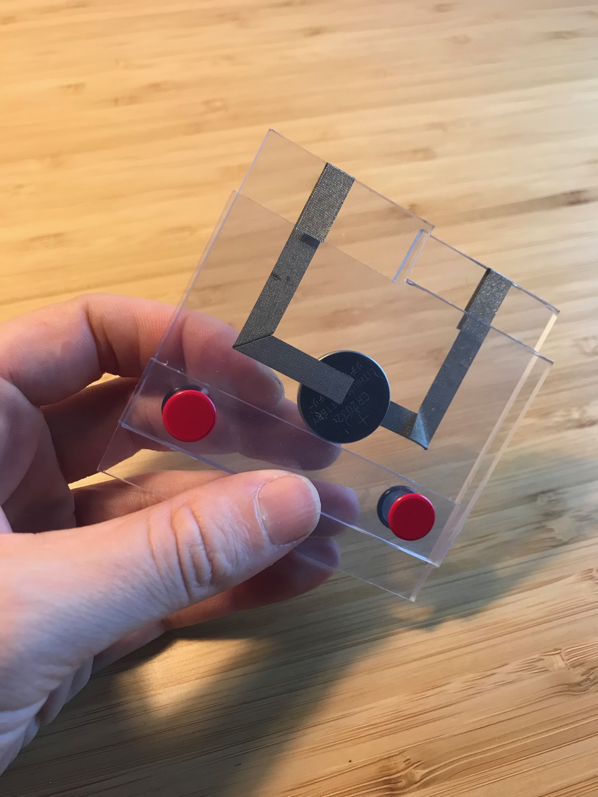
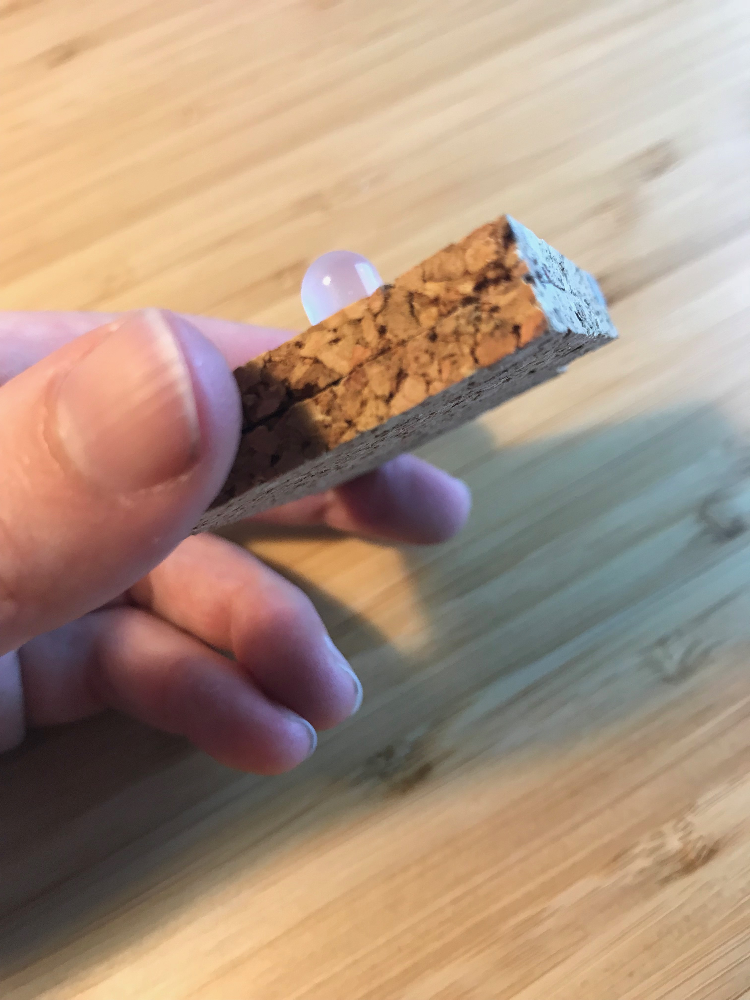
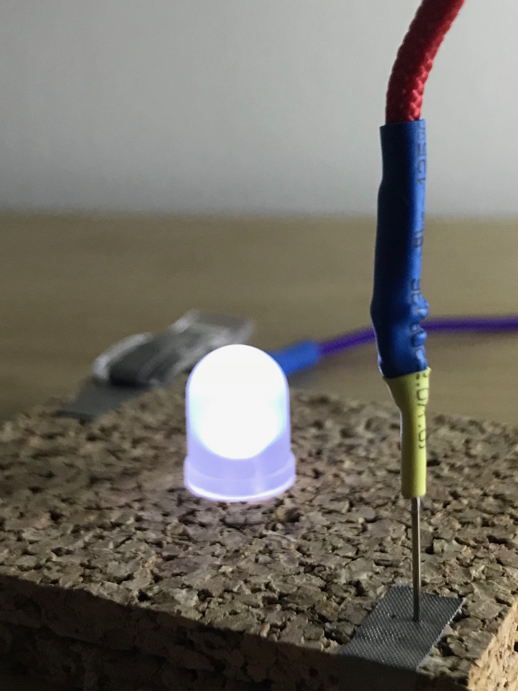
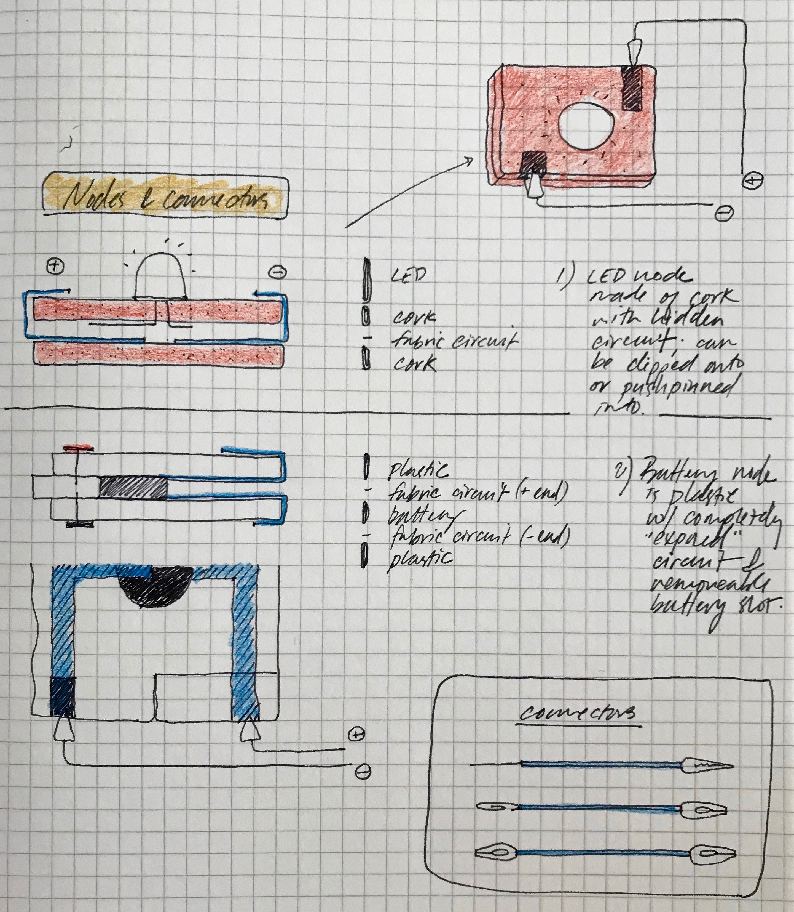
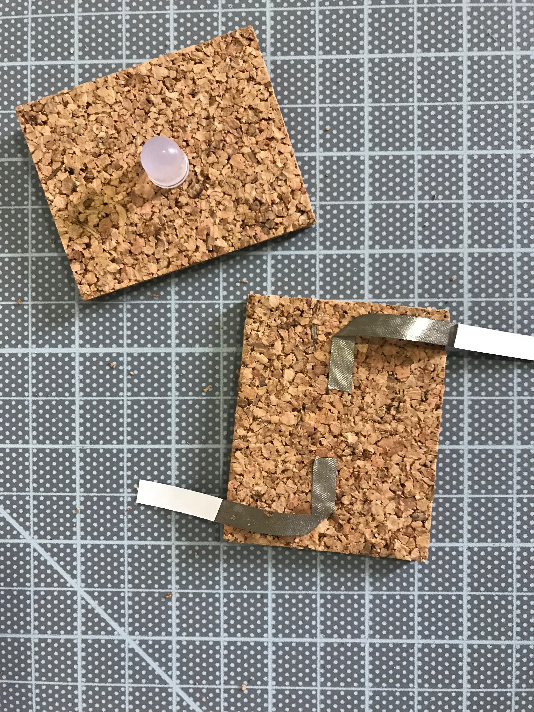
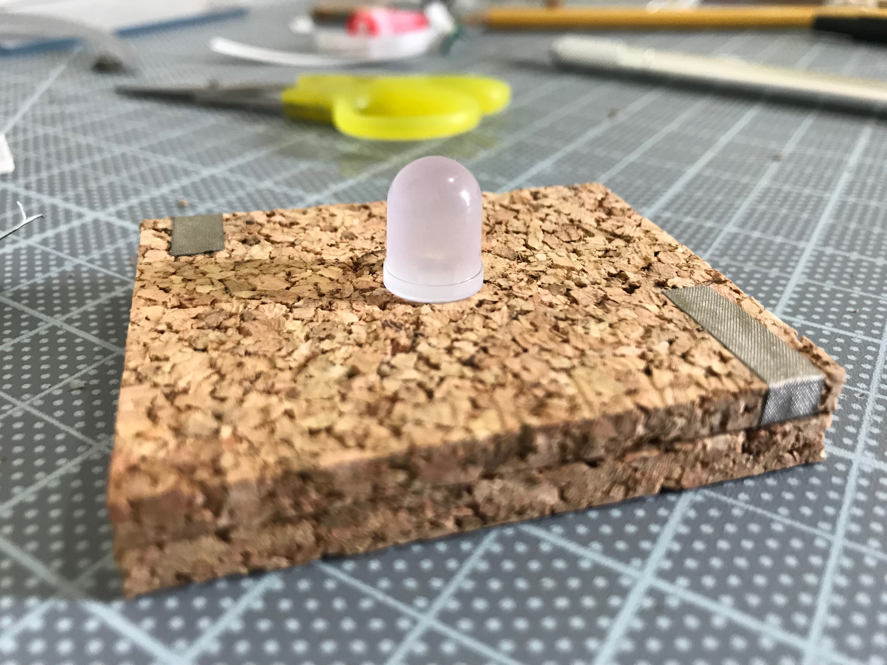

Nodes and Connectors
A set of five hand-made components explore connections between different soft materials. Components include: one cork LED node, one soft plastic battery node (with removable battery), and three conductive connectors with varying ends.

Clip-to-clip connector, clip-to-paper clip connector, pin-to-gator clip connector; cork node with hidden conductive fabric tape and LED; flexible plastic battery node with conductive tape and removable cell battery

Nodes in action: the battery node powers the LED via connectors
Plastic battery node allows for easy battery insertion and removal; black and red pins on either side suggest a positive and negative orientation for the battery
LED node contains a fabric circut sandwiched between thin sheets of cork; connections can be made by clip or by pushpin

Battery node in action
Closeup of pushpin connection with the cork-based LED node
Planning
Construction
Construction